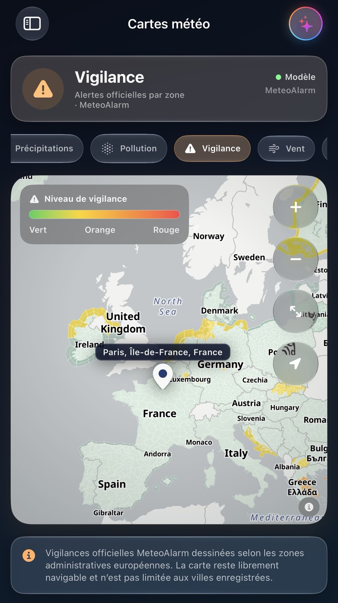
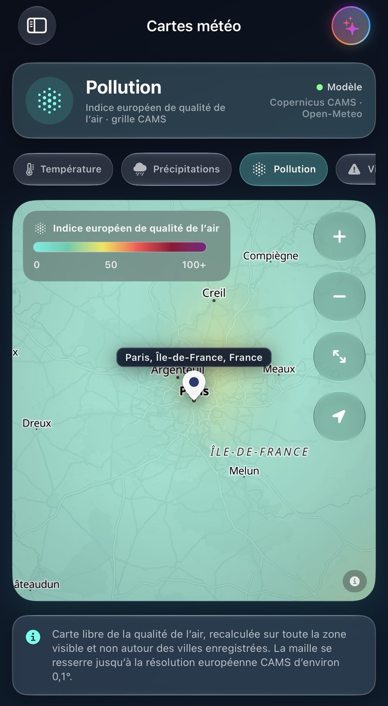

Voyez le ciel venir.
Liquid Weather réunit les meilleurs modèles météo du monde dans une interface en verre liquide. Gratuite, sans publicité, sans abonnement, en 7 langues, avec 10 jours de prévisions heure par heure.
Disponible sur
Liquid Weather réunit les meilleurs modèles météo du monde dans une interface en verre liquide. Gratuite, sans publicité, sans abonnement, en 7 langues, avec 10 jours de prévisions heure par heure.
Disponible sur
Accueil
Une carte du ciel qui vit : nuages, pluie, neige, orage, Lune. Puis tout ce qui compte, de haut en bas.
Prévisions
Chaque variable a son graphique : températures, précipitations, vent, UV, pression… avec un curseur pour lire la valeur exacte.
Comparer
AROME, ICON, ARPEGE, GFS, ECMWF, UKMO et bien d’autres, face à face : accords, désaccords, et évolution d’un calcul à l’autre.
Cartes
Température, pluie, vent, nuages, neige, orages, animés heure par heure. Le modèle le plus fin est choisi selon votre zoom : AROME HD sur la France.
Lunaria
Phases réelles, lever et coucher, éclipses : tout vient des éphémérides, avec une vraie Lune qui change de phase.


Vraies captures de l’app, affichée en français (7 langues disponibles). Données du jour de la capture.
Une seule app gratuite, pour vos trois appareils. Chacun a sa propre mise en page, pensée pour la taille de son écran.
iPad
Sur iPad, l’app passe de 5 à 7 onglets et profite de toute la largeur de l’écran.
Apple Watch
Trois pages à faire défiler, et un cadran qui montre la météo d’un coup d’œil.
Pour iOS 17, iPadOS 17 et watchOS 10, ou plus récents.
Schémas simplifiés, ce ne sont pas des captures d’écran.
Chaque centre météo calcule sa propre prévision. Pour demain, elles se ressemblent. Pour dans huit jours, beaucoup moins. Liquid Weather les met sur le même graphique, vous dit si elles s’accordent, et vous montre si la prévision change d’un calcul à l’autre.
Une seule app pour comprendre le temps qu’il fait, celui qui arrive, et la confiance qu’on peut lui accorder.
Heure par heure et jusqu’à 10 jours : température, ressenti, vent, rafales, humidité, pression, UV, précipitations. Touchez une donnée pour plonger dans le détail.
Vigilances officielles MeteoAlarm de votre zone, notifications utiles et indicateurs de risque lisibles d’un coup d’œil.
Toute l’app est disponible en 7 langues.
Une interface en verre liquide pensée pour iOS : tout répond, tout s’anime, rien ne surcharge.
iPhone, iPad, Apple Watch. Widgets d’écran d’accueil et d’écran verrouillé, complications, tableau de risques sur iPad.
Ce que fait le ciel, expliqué simplement.
Chargement des articles…
Les cartes de pollution et de vigilance sont déjà dans l’appli. Ask Liquid gagnera en précision plus tard cette année.
Déjà dans l’appli
La carte des vigilances MeteoAlarm affiche les alertes météo officielles zone par zone, sur toute l’Europe, du vert au rouge.
La carte de la pollution montre la qualité de l’air avec l’indice européen, à partir des données Copernicus CAMS. Elle devient plus précise quand vous zoomez.


Plus tard cette année
Avec une connexion internet, Ask Liquid s’appuiera sur un modèle plus puissant : plus d’informations à la fois, des réponses meilleures et plus précises. Sans connexion, il continue de fonctionner avec le modèle de votre iPhone.
Selon Apple, ce service est conçu pour protéger la vie privée : les données de votre demande ne sont ni stockées ni conservées une fois la réponse donnée.
Aucune inscription, aucun identifiant : ouvrez l’app et c’est parti.
Pas de publicité, pas de système de suivi publicitaire propre à l’application.
Autorisez-la pour la météo locale, ou choisissez simplement une ville. Vous gardez la main.
Lire la politique de confidentialité
Les cartes lisent les fichiers ouverts de Météo-France, du DWD et de la NOAA puis les décodent sur votre appareil. Aucun serveur Liquid Weather ne s’interpose entre vous et les données officielles.
Oui. L’application est gratuite, sans publicité ni abonnement.
Les prévisions viennent d’Open-Meteo. Les cartes lisent directement les données ouvertes de Météo-France (AROME, ARPEGE), du DWD (ICON) et de la NOAA (GFS). La Lune est calculée sur l’appareil ; la foudre vient du satellite EUMETSAT ; les vigilances de MeteoAlarm ; le risque feux de Copernicus EFFIS.
Non, et c’est dit clairement dans l’app : ce sont des prévisions de modèles, jamais des observations radar. Seule la couche foudre est une observation satellite.
iPhone (iOS 17 ou plus récent), iPad (iPadOS 17 ou plus récent) et Apple Watch (watchOS 10 ou plus récent). Les résumés et l’assistant IA fonctionnent sur les appareils compatibles Apple Intelligence.
Non. Elle est facultative : vous pouvez choisir une ville à la main et modifier l’autorisation à tout moment dans les réglages iOS.
Par e-mail à supportliquidweatherapp@gmail.com, ou depuis la page Assistance. Nous lisons tout.
Si elle vous plaît, vous pouvez m’offrir un café. C’est ce qui m’aide à continuer à la faire grandir.
Le lien s’ouvre sur Buy Me a Coffee.
Écrivez-nous : nous lisons tout.